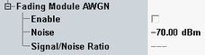

The following parameters enable and configure the AWGN insertion on the fading module. For background information, see "AWGN Generator".
For multi-carrier scenarios, the same AWGN settings apply to all carriers. The signal to noise ratio can nevertheless be different for carriers, due to a different downlink carrier power.

Enables/disables AWGN insertion via the fading module.
Remote command:Total level of the AWGN interferer within the channel bandwidth (the spectral density integrated across the carrier bandwidth of 3.84 MHz).
The properties of the AWGN interferer comply with the requirements of 3GPP. Refer to 3GPP TS 34.121, section 7.1.2 (minimum bandwidth 5.76 MHz, flatness less than ±0.5 dB, peak to average ratio at a probability of 0.001 % above 10 dB).
Remote command:Displays the signal to noise ratio resulting from the configured AWGN level and the base level of the downlink signal generator.
Remote command: